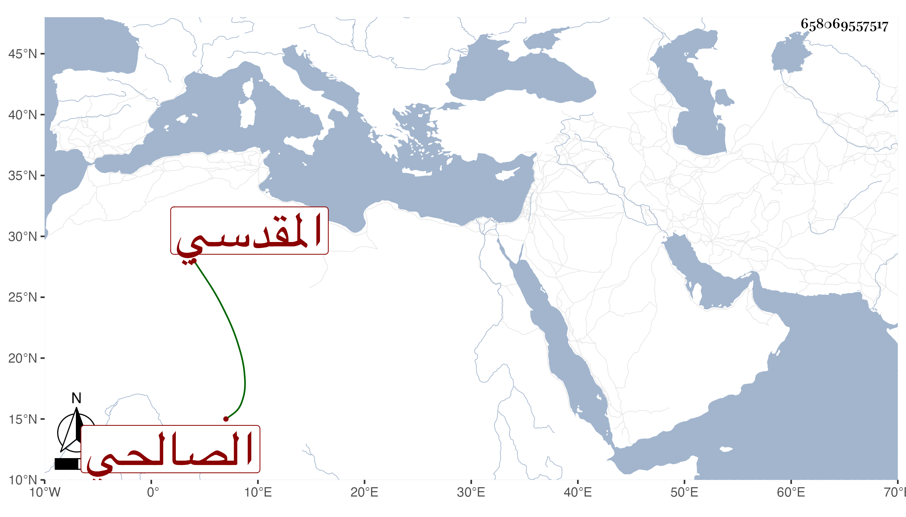

0902Sakhawi.DawLamic.ITO20230111-ara1.EIS1600.658069557517
Biography ID: 658069557517
175
عبد الله بن محمد بن أحمد بن يوسف بن أحمد تقي الدين المقدسي الصالحي ويعرف بابن الحاج . ولد في شوال سنة ست وسبعين وسبعمائة وسمع من أبي الفرج عبد الرحمن بن أحمد بن إسماعيل بن الذهبي ومحمد بن أحمد بن عبد الحميد ابن غشم وأبي حفص البالسي موافقات ابنه الكمال كلهم عنها سماعا للأول وحضورا للآخرين وأجازه وكذا سمع على الجمال بن الشرايحي وحدث وكتب التوقيع عند ابن مفلح . مات سنة إحدى وأربعين .
